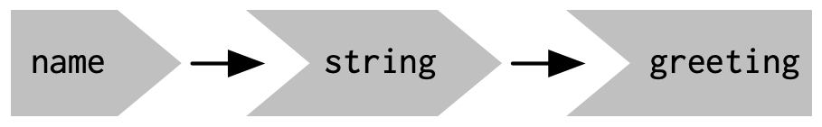
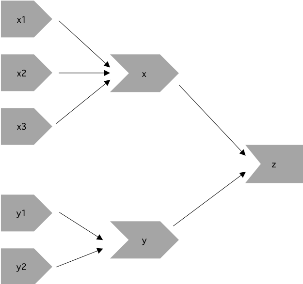
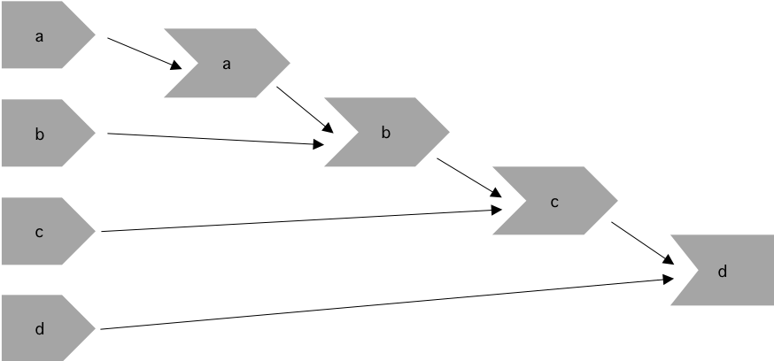
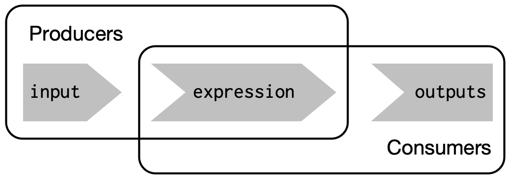
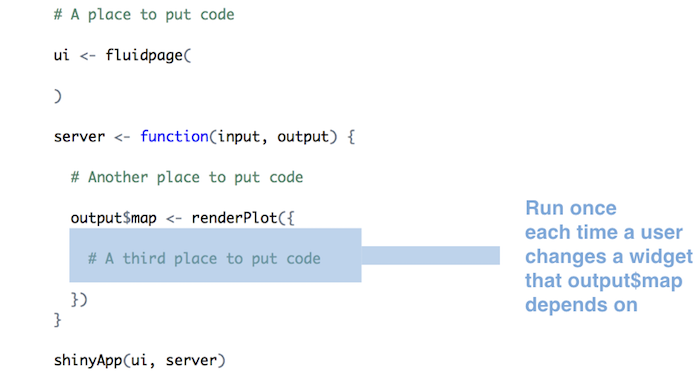

library(shiny)
# front end interface (Html)
1ui <- fluidPage()
# back end logic
2server <- function(input, output, session) {}
shinyApp(ui, server)- 1
- User interface
- 2
- Server
reactive() หรือ observe()Sources: @wickham2021mastering [Ch. 3]
library(shiny)
# front end interface (Html)
1ui <- fluidPage()
# back end logic
2server <- function(input, output, session) {}
shinyApp(ui, server)ui ง่ายเพราะผู้ใช้ทุกคนจะได้ code html เดียวกันserver ค่อนข้างซับซ้อน เพราะแต่ล่ะคนที่ใช้จะไม่เหมือนกัน
server() จะถูกเรียกทุกครั้งที่เริ่มใช้งาน
input, output, session) ที่จะถูกสร้างอัตโนมัติโดย Shiny app เมื่อเริ่มต้นใช้งานinput: เป็นตัวแปรแบบ list ที่จะรับ input ทุกตัวที่ส่งมาจาก browser โดย input ที่มาจะมีชื่อตาม input ID
numericInput("count", label = "Number of values", value = 100) จะสร้าง input$countinput สามารถอ่านค่าได้จากภายใน reactive functions อย่าง renderText() หรือ reactive()
output: เป็นตัวแปรแบบ list ที่ประกอบด้วย outputs ตามชื่อ output ID
output ใช้สำหรับส่งค่า output แทนที่จะรับ input (ส่วนใหญ่จะเป็นพวก render function)ui <- fluidPage(
textInput("name", "What's your name?"),
textOutput("greeting")
)
server <- function(input, output, session) {
1 output$greeting <- renderText({
paste0("Hello ", input$name, "!")
})
}
shinyApp(ui, server)renderText() ทำหน้าที่ convert ผลลัพธ์เป็น HTML ให้ตรงตามที่ต้องการบนหน้า web page
server ทำหน้าที่สร้างหรือคอยอัพเดท outputs ตามชนิดที่ต้องการ
output$...renderImage({...})renderPlot({...})renderPlotly({...}) (!)renderPrint({...})renderTable({...})renderDataTable({...}) (!)renderText({...})renderUI({...}) (!)renderLeaflet({...}) (!)renderImage({...}) สร้าง output แบบ imagesrenderPlot({...}) สร้าง plotsrenderPlotly({...}) สร้าง interactive plotly กราฟต่างๆrenderPrint({...}) สำหรับ output จากคำสั่ง printrenderTable({...}) สำหรับ data frame, matrix, หรือพวกตารางต่างๆ
renderDataTable({...}) สร้าง interactive datatablerenderText({...}) สำหรับแสดงข้อความrenderUI({...}) สร้างพวก UIrenderLeaflet({...}) สร้างแผนที่ leafletui <- fluidPage(
textInput("name", "What's your name?"),
textOutput("greeting")
)
server <- function(input, output, session) {
output$greeting <- renderText({
paste0("Hello ", input$name, "!")
})
}
shinyApp(ui, server)renderText() ทุกครั้งที่เราอัพเดทค่า input$nameoutput$greeting จะมีการคำนวณใหม่ทุกครั้งที่ input$name มีการเปลี่ยนgreeting มันจะขึ้นกับname
string ดู code ด้านล่าง
string ถูกสร้างแบบ reactive() function ใน Section 5.1 อยากให้สังเกตการเรียกค่าไปใช้ui <- fluidPage(
textInput("name", "What's your name?"),
textOutput("greeting"),
)
server <- function(input, output, session) {
string <- reactive(paste0("Hello ", input$name, "!"))
output$greeting <- renderText(string())
}
shinyApp(ui, server)ui <- fluidPage(
textInput("name", "What's your name?"),
textOutput("greeting"),
textOutput("greeting2")
)
server <- function(input, output, session) {
string <- reactive(paste0("Hello ", input$name, "!"))
output$greeting <- renderText(string())
output$greeting2 <- renderText(string())
}
shinyApp(ui, server)ui <- fluidPage(
textInput("name", "What's your name?"),
textOutput("greeting"),
)
server <- function(input, output, session) {
output$greeting <- renderText(string())
string <- reactive(paste0("Hello ", input$name, "!"))
}
shinyApp(ui, server)server1, server2 และ server3 นี้ผิดตรงไหน# UI
ui <- fluidPage(
textInput("name", "What's your name?"),
textOutput("greeting")
)
# SERVERS
server1 <- function(input, output, server) {
input$greeting <- renderText(paste0("Hello ", name))
}
# HOMEWORK!
server2 <- function(input, output, server) {
greeting <- paste0("Hello ", input$name)
output$greeting <- renderText(greeting)
}
server3 <- function(input, output, server) {
output$greting <- paste0("Hello", input$name)
}server2 กับ server3!)เริ่มด้วยการดูว่ามี inputs (1), reactives (2) และ ouputs (3) กี่ที่ตรงไหนบ้าง และทำหน้าที่อะไร จากนั้นเริ่มเขียน inputs ใน column แรกทางซ้าย เราอาจจะใช้ อย่างเช่น name> สำหรับ inputs >name> สำหรับ reactives และ >name สำหรับ outputs และใช้ลูกศรเชื่อม
server1 <- function(input, output, session) {
c <- reactive(input$a + input$b)
e <- reactive(c() + input$d)
output$f <- renderText(e())
}
server2 <- function(input, output, session) {
x <- reactive(input$x1 + input$x2 + input$x3)
y <- reactive(input$y1 + input$y2)
output$z <- renderText(x() / y())
}
server3 <- function(input, output, session) {
d <- reactive(c() ^ input$d)
a <- reactive(input$a * 10)
c <- reactive(b() / input$c)
b <- reactive(a() + input$b)
}server1, server2 และ server3server1: ลืม input$server2: input$name อยู่นอก renderText() functionserver3: พิมพ์ผิด output$gretingในการสร้าง reactive graph เราต้องพิจารณา inputs, reactive expressions, และ outputs ของ app
สำหรับ server1 เรามี:
input$a, input$b, และ input$dc() และ e()output$fInputs input$a และ input$b ถูกใช้สร้าง c() ซึ่งรวมกับ input$d เพื่อสร้าง e() และ สุดท้าย output จะขึ้นกับ e()

สำหรับ server2 เรามี:
input$y1, input$y2, input$x1, input$x2, input$x3y() and x()output$zInputs input$y1 กับ input$y2 ถูกใช้สร้าง reactive y()และ inputs input$x1, input$x2 กับ input$x3 ถูกใช้สร้าง reactive x() ดังนั้น output ขึ้นกับค่า x() และ y()

สำหรับ server3 เรามี:
input$a, input$b, input$c, input$da(), b(), c(), d()ซึ่งจากด้านล่างเราจะเห็นว่า a() ขึ้นกับค่า input$a และ b() ก็ขึ้นกับ a() และ input$b ส่วน c() ขึ้นกับ b() และ input$c และ output สุดท้ายขึ้นกับทั้ง c() และ input$d

reactive()) มันสำคัญเพราะ…

reactive(), observe(), bindevent() และอื่นๆ`reactive(): สำหรับสร้าง reactive expression
string จะเปลี่ยนค่าทุกครั้งที่ input$name เปลี่ยนค่าui <- fluidPage(
textInput("name", "What's your name?"),
textOutput("greeting"),
)
server <- function(input, output, session) {
string <- reactive(paste0("Hello ", input$name, "!"))
output$greeting <- renderText(string())
}
shinyApp(ui, server)
})reactive(): สร้าง reactive expression ที่ค่าจะเปลี่ยนตามinputsจากผู้ใช้observe(): สร้างตัวสังเกตุที่จะรันเฉพาะเมื่อตัว reactive ที่ขึ้นกับมันเปลี่ยน
observe() จะรันอีกครั้งถ้าตัว reactive inputs หรือ reactive expressions ที่มันอ้างถึงมีการอัพเดทค่าobserve() กับตัวแปร ดังนั้นเราจะไม่สามารถอ้างถึงมันจาก reactive consumers อันอื่นได้ด้านล่างนี้เราใช้ reactive expression กับ reactive() เพื่อสร้าง squared จากนั้นก็เอามันไปใช้อีกใน observe() function ซึ่งถูกห่อใน render function อย่างrenderText() อีกทีเพื่อสร้าง output$text
library(shiny)
ui <- fluidPage(
numericInput("num", "Enter a number", value = 1),
textOutput("text")
)
server <- function(input, output) {
# reactive expression
squared <- reactive({
input$num^2
})
# observer
observe({
output$text <- renderText({
paste0("The square of ", input$num, " is ", squared())
})
})
}
shinyApp(ui = ui, server = server)bindEvent(): เป็นคำสั่งที่ช่วยจัดการกับเหตุการณ์อย่างง่ายobserveEvent() (ตัวสังเกตเหตุการณ์): ใช้เมื่อเราต้องการจะทำอะไรบ้างอย่างเมื่อมีเหตุการณ์เกิดขึ้น เหตุการณ์ในที่นี้ เช่นมีการกดปุ่ม พิมพ์ตัวอักษร ลากเม้าส์ และอื่นๆ (ดูที่ input$button ด้านล่างนี้) แต่เราไม่ได้จะใช้ผลจากactionต่อเหตุการณ์นี้ใน UIในตัวอย่าง เมื่อปุ่ม “Generate Random Number” ถูกกด จะมีการสุ่มเลขขึ้นมาตัวหนึ่ง แต่จะไม่แสดงผลทันที ตัว output$randomNumber จะถูกเชื่อมไปยังปุ่ม input$dispButton ด้วย bindEvent() และผลลัพธ์เลขสุ่มจะแสดงก็ต่อเมื่อปุ่ม “Display Random Number” ถูกกด ด้วยวิธีนี้เราสามารถที่จะควบคุม UI ได้ว่าจะอัพเดทผลลัพธ์เมื่อใด
library(shiny)
# Define UI
ui <- fluidPage(
actionButton("genButton", "Generate Random Number"),
actionButton("dispButton", "Display Random Number"),
textOutput("randomNumber")
)
# Define server logic
server <- function(input, output) {
randNum <- reactiveValues(num = NULL)
observeEvent(input$genButton, {
randNum$num <- runif(1) # Generate a random number when genButton is clicked
})
output$randomNumber <- renderText({
randNum$num # Generate the reactive expression
}) %>%
bindEvent(input$dispButton) # Binding the output$randomNumber reactive expression to dispButton
}
# Run the application
shinyApp(ui = ui, server = server, options = list(display.mode='showcase'))bind_event()eventReactive(): เหมือนกับ reactive() แต่จะcode ภายในจะถูกรันเมื่อมีเหตุการณ์ที่สนใจเกิดขึ้น สามารถที่จะใช้ร่วมกับ observeEvent()ได้ผลลัพธ์จะเหมือนกับ app ก่อนหน้านี้ ตัว eventReactive() function ถูกใช้สร้างตัวแปรแบบ reactive (ตัวเลขสุ่ม) ที่มันจะอัพเดทเฉพาะเมื่อมีการกดปุ่ม “Generate Random Number” เท่านั้น
library(shiny)
# Define UI
ui <- fluidPage(
actionButton("genButton", "Generate Random Number"),
actionButton("dispButton", "Display Random Number"),
textOutput("randomNumber")
)
# Define server logic
server <- function(input, output) {
randNum <- eventReactive(input$genButton, {
runif(1) # Generate a random number when genButton is clicked
})
observeEvent(input$dispButton, {
output$randomNumber <- renderText({ randNum() }) # Display the random number when dispButton is clicked
})
}
# Run the application
shinyApp(ui = ui, server = server, options = list(display.mode='showcase'))isolate(): ใช้เพื่อเข้าถึงค่าของ reactive expression หรือ input โดยไม่ต้องผ่านค่าอะไรเลย
ใน app เลขสุ่มจะไม่แสดงผลทันทีหลังจากกดปุ่ม “Generate Random Number” เลขสุ่มที่เกิดขึ้นจะยังไม่มีผลเพราะมันถูก แยกออกมาด้วย isolate() function ซึ่งมันจะแสดงค่าก็ต่อเมื่อ ปุ่ม “Display Random Number” ถูกกด การเปลี่ยนค่าของ randNum$num หลังจากปุ่ม “Display Random Number” ถูกกด จะยังไม่มีผลจนกว่า ปุ่ม “Display Random Number” จะถูกกดอีกครั้ง ฉะนั้น isolate() function ช่วยให้เราใช้หรือเข้าถึงค่าแบบ reactive values โดยที่ไม่ต้องมี trigger
library(shiny)
# Define UI
ui <- fluidPage(
actionButton("genButton", "Generate Random Number"),
actionButton("dispButton", "Display Random Number"),
textOutput("randomNumber")
)
# Define server logic
server <- function(input, output) {
randNum <- reactiveValues(num = NULL) # Create object to store reactiv values
observeEvent(input$genButton, {
randNum$num <- runif(1) # Generate a random number when genButton is clicked
})
observeEvent(input$dispButton, {
output$randomNumber <- renderText({
isolate(randNum$num) # Display the random number when dispButton is clicked, but do not reactivity link it
})
})
}
# Run the application
shinyApp(ui = ui, server = server, options = list(display.mode='showcase'))reactiveTimer(): ใช้สำหรับสร้าง reactive expression ที่จะหยุดสักช่วงเวลาหนึ่ง (เป็น milliseconds) มีประโยชน์กรณีทีเราต้องการให้บางส่วนใน app มีการอัพเดทเป็นช่วงเวลาที่ต้องการในตัวอย่าง autoInvalidate() คือ reactive expression ที่จะทำให้หยุดทุก 1000 milliseconds โดยการใช้autoInvalidate() ข้างใน renderText() เป็นการบอกว่าทุกครั้งที่ autoInvalidate() หยุดทำงาน ก็จะมีการคำนวณและแสดงเวลาใหม่
library(shiny)
# Define UI
ui <- fluidPage(
textOutput("currentTime")
)
# Define server logic
server <- function(input, output) {
# Define a reactive timer with a 1000ms (1s) interval
autoInvalidate <- reactiveTimer(1000)
output$currentTime <- renderText({
autoInvalidate() # This line causes the reactive expression to be invalidated (and thus re-evaluated) every second
format(Sys.time(), "%a %b %d %Y %X") # Display the current time
})
}
# Run the application
shinyApp(ui = ui, server = server)reactive(), observe(), isolate(), bindEvent().library(shiny)
library(htmltools)
library(bs4Dash)
library(fresh)
library(waiter)
library(shinyWidgets)
library(Guerry)
library(sf)
library(tidyr)
library(dplyr)
library(RColorBrewer)
library(viridis)
library(leaflet)
library(plotly)
library(jsonlite)
library(ggplot2)
library(GGally)
library(datawizard)
library(parameters)
library(performance)
library(ggdark)
library(modelsummary)
# 1 Data preparation ----
## Load & clean data ----
variable_names <- list(
Crime_pers = "Crime against persons",
Crime_prop = "Crime against property",
Literacy = "Literacy",
Donations = "Donations to the poor",
Infants = "Illegitimate births",
Suicides = "Suicides",
Wealth = "Tax / capita",
Commerce = "Commerce & Industry",
Clergy = "Clergy",
Crime_parents = "Crime against parents",
Infanticide = "Infanticides",
Donation_clergy = "Donations to the clergy",
Lottery = "Wager on Royal Lottery",
Desertion = "Military desertion",
Instruction = "Instruction",
Prostitutes = "Prostitutes",
Distance = "Distance to paris",
Area = "Area",
Pop1831 = "Population"
)
data_guerry <- Guerry::gfrance85 %>%
st_as_sf() %>%
as_tibble() %>%
st_as_sf(crs = 27572) %>%
mutate(Region = case_match(
Region,
"C" ~ "Central",
"E" ~ "East",
"N" ~ "North",
"S" ~ "South",
"W" ~ "West"
)) %>%
select(-c("COUNT", "dept", "AVE_ID_GEO", "CODE_DEPT")) %>%
select(Region:Department, all_of(names(variable_names)))
## Prep data (Tab: Tabulate data) ----
data_guerry_tabulate <- data_guerry %>%
st_drop_geometry() %>%
mutate(across(.cols = all_of(names(variable_names)), round, 2))
# 3 UI ----
ui <- dashboardPage(
title = "The Guerry Dashboard",
## 3.1 Header ----
header = dashboardHeader(
title = tagList(
span("The Guerry Dashboard", class = "brand-text")
)
),
## 3.2 Sidebar ----
sidebar = dashboardSidebar(
id = "sidebar",
sidebarMenu(
id = "sidebarMenu",
menuItem(tabName = "tab_tabulate", text = "Tabulate data", icon = icon("table")),
flat = TRUE
),
minified = TRUE,
collapsed = TRUE,
fixed = FALSE,
skin = "light"
),
## 3.3 Body ----
body = dashboardBody(
tabItems(
### 3.3.2 Tab: Tabulate data ----
tabItem(
tabName = "tab_tabulate",
fluidRow(
#### Inputs(s) ----
pickerInput(
"tab_tabulate_select",
label = "Filter variables",
choices = setNames(names(variable_names), variable_names),
options = pickerOptions(
actionsBox = TRUE,
windowPadding = c(30, 0, 0, 0),
liveSearch = TRUE,
selectedTextFormat = "count",
countSelectedText = "{0} variables selected",
noneSelectedText = "No filters applied"
),
inline = TRUE,
multiple = TRUE
)
),
hr(),
#### Output(s) (Data table) ----
DT::dataTableOutput("tab_tabulate_table")
)
) # end tabItems
)
)
# 4 Server ----
server <- function(input, output, session) {
## 4.1 Tabulate data ----
### Variable selection ----
tab <- reactive({
var <- input$tab_tabulate_select
data_table <- data_guerry_tabulate
if (!is.null(var)) {
data_table <- data_table[, c("Region", "Department",var)]
}
data_table
})
### Create table----
dt <- reactive({
tab <- tab()
ridx <- ifelse("Department" %in% names(tab), 3, 1)
DT::datatable(
tab,
class = "hover",
extensions = c("Buttons"),
selection = "none",
filter = list(position = "top", clear = FALSE),
style = "bootstrap4",
rownames = FALSE,
options = list(
dom = "Brtip",
deferRender = TRUE,
scroller = TRUE,
buttons = list(
list(extend = "copy", text = "Copy to clipboard"),
list(extend = "pdf", text = "Save as PDF"),
list(extend = "csv", text = "Save as CSV"),
list(extend = "excel", text = "Save as JSON", action = DT::JS("
function (e, dt, button, config) {
var data = dt.buttons.exportData();
$.fn.dataTable.fileSave(
new Blob([JSON.stringify(data)]),
'Shiny dashboard.json'
);
}
"))
)
)
)
})
### Render table----
output$tab_tabulate_table <- DT::renderDataTable(dt(), server = FALSE)
}
shinyApp(ui, server)code มันถูกรันตอนไหน (ลองดูที่นี่)
Code ที่อยู่นอก ui กับ server จะถูกรันทันทีที่ app ถูกเริ่มใช้งาน


input$...) และ ouput$... ก็เปลี่ยนตาม
server <- function(input, output) {} จะถูกรันครั้งเดียวตอน app เริ่มทำงานserver <- function(input, output) {} จะรันครั้งเดียวตอนที่ผู้ใช้เปิดapprender* จะมีการรันใหม่ถ้ามีการอัพเดท inputs ( ดูที่ reactivity)server function (ตรงตำแหน่งเริ่มต้น)
www/ ของ appread.table("www/swiss.csv", sep=",")read* function (เช่น read.table())render* function
render* ทุกครั้งที่ input widgets มีการเปลี่ยนค่าในการสร้าง reactive shiny apps…
*Output เพื่อวาง reactive objects บน UI (webpage)render* เพื่อให้ R สร้าง output objects (บน server)
server <- function(input, output) {...}){} ใน render* functionsrender* จะถูกเก็บไว้ที่ output listinput ใน render* expressionreactlog สามารถใช้เพื่อแสดงผลและสำรวจ reactivity ของ Shiny app# Restart R to delete log
.rs.restartR()
library(shiny)
library(reactlog)
# tell shiny to log all reactivity
reactlog_enable()
# reactlog_disable()
# run a shiny app
runApp("shinyapps/guerry/states_paul/app_tab_tabulate.R")
# once app has closed, display reactlog from shiny
shiny::reactlogShow()